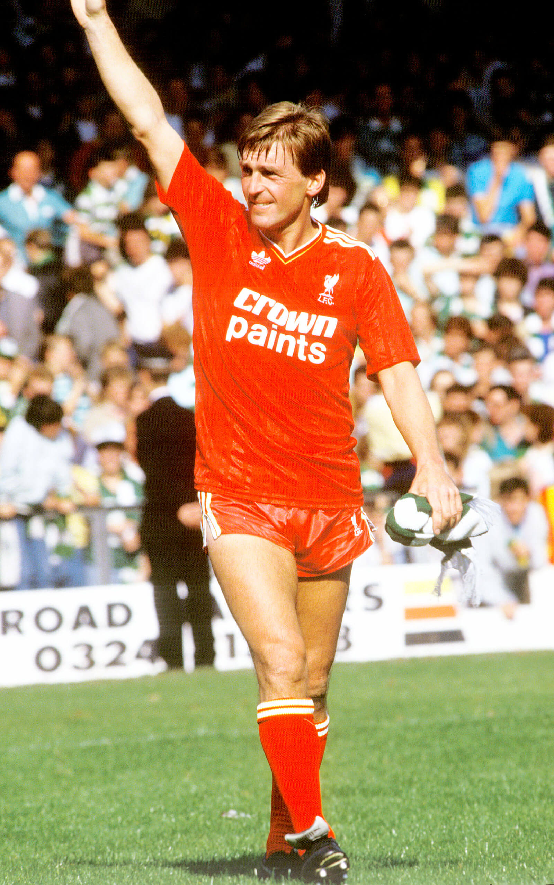

Kenny Dalglish – King Kenny
Full Name: Kenneth Mathieson Dalglish
Date of Birth: March 4, 1951
Place of Birth: Glasgow, Scotland
Position: Forward / Attacking Midfielder
Clubs: Celtic, Liverpool
National Team: Scotland
Career Highlights
- Won 9 league titles and 3 European Cups with Liverpool
- Scored 172 goals for Liverpool
- Made over 100 appearances for Scotland
- Won numerous domestic titles with Celtic before joining Liverpool
- Voted PFA Player of the Year in 1983
Managerial Career
- Player-Manager of Liverpool (1985–1991)
- Won 3 league titles and 2 FA Cups as manager
- Later managed Blackburn Rovers and won the Premier League in 1995
- Also managed Newcastle United and returned to Liverpool in 2011
Playing Style
- Intelligent, creative, and technically brilliant forward
- Excellent link-up play and finishing ability
- Known for vision, composure, and tactical awareness
- Respected leader both on and off the pitch
Legacy
- Nicknamed “King Kenny” by Liverpool fans
- Knighted in 2018 for services to football and charity
- One of the most admired figures in British football history
- Liverpool’s Kenny Dalglish Stand at Anfield named in his honour

←Back to Football Index